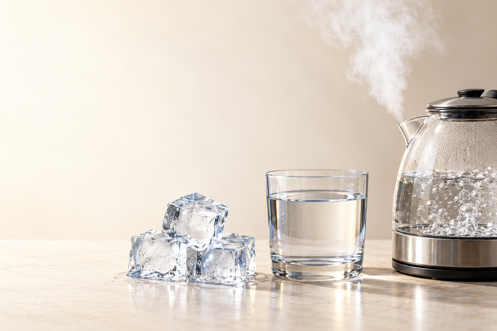
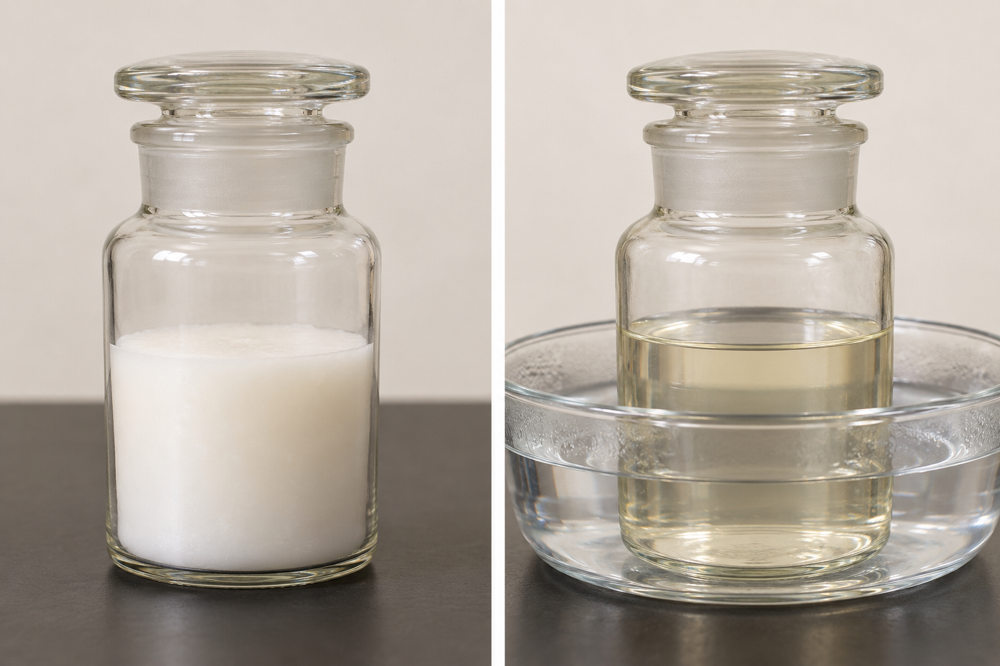

中学1年 理科
状態変化
物質のすがた
状態変化
同じ物質が、固体・液体・気体を行き来する

単元の入口
氷・水・水蒸気は、同じ物質
氷は固体、水は液体
水蒸気は気体。目には見えない
姿が変わっても、水という物質は同じ
物質の三態
物質には、三つの状態がある
固体形も体積も決まる
液体体積は決まり、形は容器しだい
気体形も体積も決まらない
固体・液体・気体を、物質の三態という
加熱や冷却で、状態を行き来する
覚えること
状態が変わる六つの道
固体
液体
気体
融解固体 → 液体
凝固液体 → 固体
気化液体 → 気体
凝結気体 → 液体
昇華固体 → 気体
昇華気体 → 固体
粒子で見る状態変化
粒子は、なくならない
固体
液体
気体
変わるのは、粒子の並び方・間隔・運動
粒子の種類と数は変わらない
新しい物質はできていない
観察から考える
ろうがとけると、体積はどうなる？

加熱前：白い固体
温める：透明に近い液体
同じ量でも、状態によって体積が変わる
体積の変化
多くの物質は、気体で最も広がる
固体
液体
気体
固体 → 液体：粒子の間隔が少し変わる
液体 → 気体：粒子の間隔が大きく広がる
一般に、固体 ＜ 液体 ＜ 気体の順に体積が大きい
水の例外
水は、固体になると体積が増える
水
冷やす →
氷
水は凍ると、粒子の並びにすき間ができる
同じ質量でも、氷のほうが体積が大きい
そのため、氷は水に浮く
質量の変化
状態が変わっても、質量は変わらない
固体
加熱 →
液体
ふたをした容器の中なら、粒子は外へ出ない
粒子の数が同じだから、質量は変わらない
開いた容器で減るのは、気体が外へ出るため
確認
体積と質量を分けて考えよう
水が氷になるとき、
体積と質量はどうなる？
体積と質量はどうなる？
体積：増える
質量：変わらない
粒子の並び方は変わるが、数は同じ
ここから温度を見る
状態変化と温度
Ⅱ融点・沸点と
融点・沸点と
温度のグラフ
温度変化のグラフ
純粋な物質を加熱する
温度
沸点融点
加熱時間 →
固体固体＋液体液体液体＋気体気体
温度は上がるが、途中で2回平らになる
1回目は固体から液体へ変わる時間
2回目は液体から気体へ変わる時間
融解と融点
とけている間、温度は一定
温度
沸点融点
加熱時間 →
固体固体＋液体液体液体＋気体気体
とけ始めの温度を融点という
とけている間は、固体と液体が両方ある
純粋な物質では、とけ終わるまで温度はほぼ一定
沸騰と沸点
沸騰している間、温度は一定
温度
沸点融点
加熱時間 →
固体固体＋液体液体液体＋気体気体
沸騰し始める温度を沸点という
沸騰中は、液体と気体が両方ある
純粋な物質では、沸騰中の温度はほぼ一定
状態変化中の熱
加熱しているのに、なぜ温度が上がらない？
加えた熱
→粒子の結びつきを
ゆるめることに使われる
ゆるめることに使われる
状態変化中も、熱は加え続けている
その熱が、状態を変えるために使われる
変化が終わると、再び温度が上がる
物質を見分ける手がかり
融点・沸点は、物質によって決まる
| 物質 | 融点 | 沸点 |
|---|---|---|
| 酸素 | −218℃ | −183℃ |
| エタノール | −115℃ | 78℃ |
| 水 | 0℃ | 100℃ |
| 鉄 | 1538℃ | 約2860℃ |
融点より低い：固体
融点より高く、沸点より低い：液体
沸点より高い：気体
表を読む
20℃のエタノールは何の状態？
−115℃融点20℃78℃沸点
20℃は、融点−115℃より高い
20℃は、沸点78℃より低い
したがって、液体
表を読む
150℃の水は何の状態？
0℃融点100℃沸点150℃
150℃は、沸点100℃より高い
1気圧付近なら、気体
温度だけでなく、融点・沸点との位置を見る
純物質と混合物
混合物は、決まった温度で止まらない
温度
加熱時間 →
混合物では、沸騰中も温度が変わる
水とエタノールは、2種類の液体の混合物
出ていく蒸気の割合が変わる
残る液体の割合も変わり、温度も少しずつ上がる
沸点の違いを使う
蒸留
Ⅲ温度と割合を
温度と割合を
一緒に追う
蒸留とは
気体にして、冷やして集める
液体の混合物
→ 加熱 →蒸気
→ 冷却 →液体
出てきた蒸気を冷やし、再び液体として集める
この方法を蒸留という
沸点の違いを利用して、混合物を分ける
装置を読む
蒸留装置の名前
● 赤：エタノール● 青：水粒子と色は模式表示
温度計
1007820
℃フラスコ内の液体蒸気 → 冷やす集まる液体
温度計出ていく蒸気の温度を測る
枝付きフラスコ水とエタノールの混合液を入れる
沸騰石急な沸騰を防ぐため、加熱前に入れる
ガラス管・冷やす部分蒸気を冷やし、液体に戻す
試験管冷えて液体になったものを集める
実験操作
安全に蒸留するための順番
● 赤：エタノール● 青：水粒子と色は模式表示
温度計
1007820
℃フラスコ内の液体蒸気 → 冷やす集まる液体
沸騰石は、加熱する前に入れる
ガラス管の先を、集める液体の中へ入れない
受ける試験管を密閉しない
火を消してから、集めた液体の性質を調べる
蒸留を時間順に追う
加熱前：液体は混ざっている
● 赤：エタノール● 青：水粒子と色は模式表示
温度計
1007820
℃フラスコ内の液体蒸気 → 冷やす集まる液体
水とエタノールは、どちらも液体
フラスコ内では均一に混ざっている
試験管には、まだ何も集まっていない
蒸留を時間順に追う
温める：液面から蒸発する
● 赤：エタノール● 青：水粒子と色は模式表示
温度計
1007820
℃フラスコ内の液体蒸気 → 冷やす集まる液体
沸点より低くても、液面では蒸発が起こる
液面から出る蒸気には、両方が含まれる
蒸気では、液体中よりエタノールの割合が高い
比較して理解する｜1気圧付近
78℃：純エタノールなら沸騰する
● 赤：エタノール● 青：水粒子と色は模式表示
温度計
1007820
℃フラスコ内の液体蒸気 → 冷やす集まる液体
ここは純エタノールだけを入れた比較図
約78℃で沸騰し、赤い粒子が管を進む
次は水とエタノールの混合液を見る
蒸留を時間順に追う
初めに出る蒸気：赤が多い
● 赤：エタノール● 青：水粒子と色は模式表示
温度計
1007820
℃フラスコ内の液体蒸気 → 冷やす集まる液体
蒸気はガラス管を進み、冷やされる
最初の液体は、エタノールの割合が高い
ただし、水も含まれている
蒸留を時間順に追う
加熱を続ける：青が増える
● 赤：エタノール● 青：水粒子と色は模式表示
温度計
1007820
℃フラスコ内の液体蒸気 → 冷やす集まる液体
フラスコ内のエタノールの割合が下がる
水の割合が上がり、温度も100℃へ近づく
集まる液体のエタノール割合は、最初より低くなる
蒸留を時間順に追う
100℃近く：ほとんど青
● 赤：エタノール● 青：水粒子と色は模式表示
温度計
1007820
℃フラスコ内の液体蒸気 → 冷やす集まる液体
フラスコに残るのは、ほとんど水
出てくる蒸気も、水の割合が高い
後で集まる液体は、燃えにくくなる
留出液を比べる
最初と後では、割合が違う
最初の液体
エタノールの割合が高い
においがあり、燃えやすい
後の液体
水の割合が高い
においが弱く、燃えにくい
どちらも、水とエタノールの混合物
違うのは、二つの物質の割合
蒸留は、完全に分ける操作とは限らない
蒸留の温度グラフ
温度の上昇と、集まる液体を対応させる
温度（℃）
100
加熱時間 →
初め：赤が多い途中：青が増える後：ほとんど青
初め：温度が上がり、エタノールの割合が高い液体が出る
途中：エタノールが減り、温度が上がる
後：100℃へ近づき、水の割合が高い液体が出る
蒸留の誤解を直す
「78℃と100℃」だけでは説明できない
沸点が低いエタノールは、蒸気に多く含まれやすい
だから最初の液体で、エタノールの割合が高くなる
温度と割合を、一緒に見ることが大切
覚えること｜まとめ
体積は変わる。質量は変わらない
固体
⇄液体
⇄気体
粒子の並び・間隔が変わる → 体積は変わる
粒子の種類・数は同じ → 質量は変わらない
覚えること｜まとめ
融点・沸点では、温度が一定
温度
沸点融点
加熱時間 →
固体固体＋液体液体液体＋気体気体
固体がとける温度が融点。液体が沸騰する温度が沸点
純粋な物質は、状態が変わっている間の温度がほぼ一定
覚えること｜まとめ
蒸留は、沸点の違いを利用する
● 赤：エタノール● 青：水粒子と色は模式表示
温度計
1007820
℃フラスコ内の液体蒸気 → 冷やす集まる液体
出てきた蒸気を冷やし、液体として集める
初めはエタノール、後は水の割合が高い